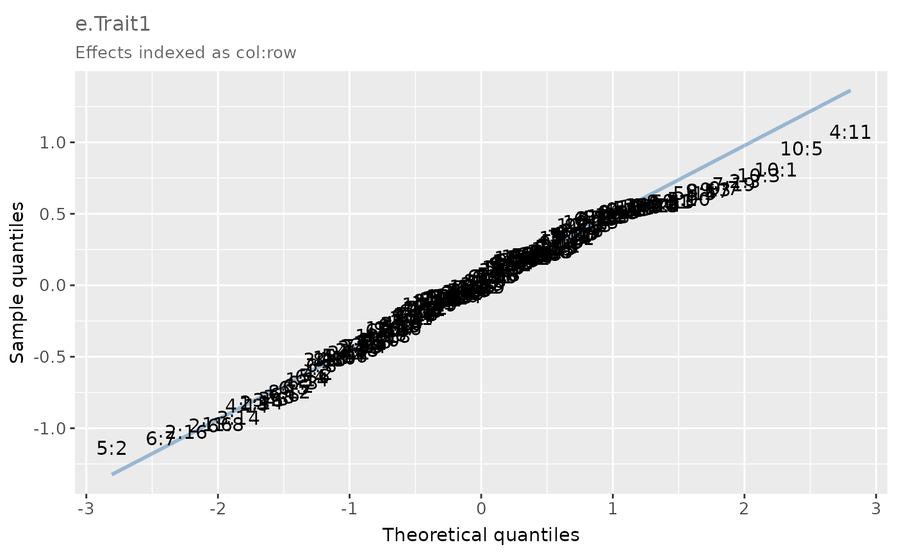

Creates a quantile-quantile (Q-Q) plot which compares the theoretical quantiles of a normal distribution with the sample quantiles of the distribution of user effects.
Arguments
- df
A data frame containing the effect to be plotted.
- effect
The name of the effect to be plotted.
- labels
When
FALSE(default), data points without labels are plotted. WhenTRUE, column and row labels are shown in the Q-Q plot. This requires additional columns 'col' and 'row' in the data frame.
Value
A Q-Q plot with the x- and y-axes displaying the theoretical and sample quantiles of the effect to be plotted, respectively.
Examples
# Q-Q plot of the simulated plot errors for trait 2 in environment 2 provided in the example
# data frame 'df_error_bivar'.
error_df <- df_error_bivar[df_error_bivar$env == 2, ]
qq <- qq_plot(
df = error_df,
effect = "e.Trait.2",
labels = TRUE
)
# Q-Q plot
qq

# Extraction of a data frame containing the theoretical and sample quantiles of
# the effect to be plotted.
qq_df <- qq$data